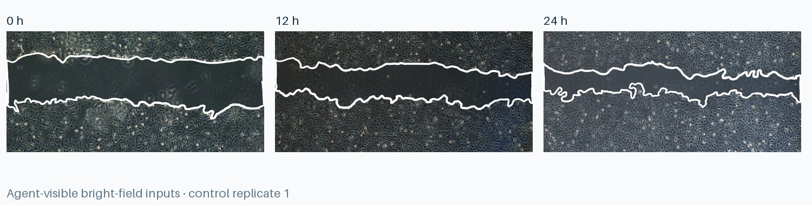

0h-{C,E}{1..3}.jpg
Six baseline images used as the denominator for the corresponding replicate.
 FrontierChallenge: A scientific workflow benchmark
FrontierChallenge: A scientific workflow benchmarkLife science · Medium
Turn a structured image experiment into reviewed segmentations, correctly paired migration rates, statistical comparisons, plots, and a reproducible report.

Filename semantics encode time point, group, and biological replicate. Every longitudinal calculation must preserve this pairing.
Six baseline images used as the denominator for the corresponding replicate.
Six intermediate images paired to the same group and replicate at baseline.
Six final-time images paired to the same baseline record.
An experimenter annotation encloses the unmigrated region; contour quality varies and requires inspection.
Detect the enclosed region in every image and visually check atypical contours instead of trusting one brittle parameter set.
Match 12 h and 24 h measurements only to the 0 h image with the same group and replicate number.
Calculate replicate-level migration rates, then report group mean, sample standard deviation, and independent-samples tests separately by time point.
Ensure the image-level table, statistical table, mean ± SD plots, p-value labels, method description, and conclusions agree.